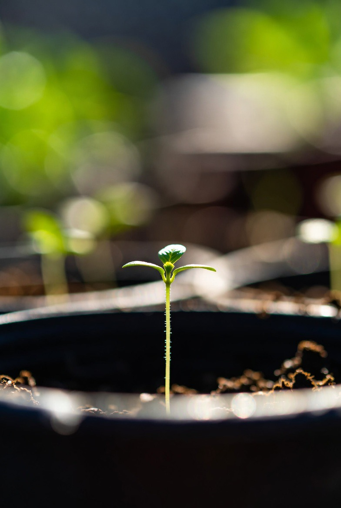
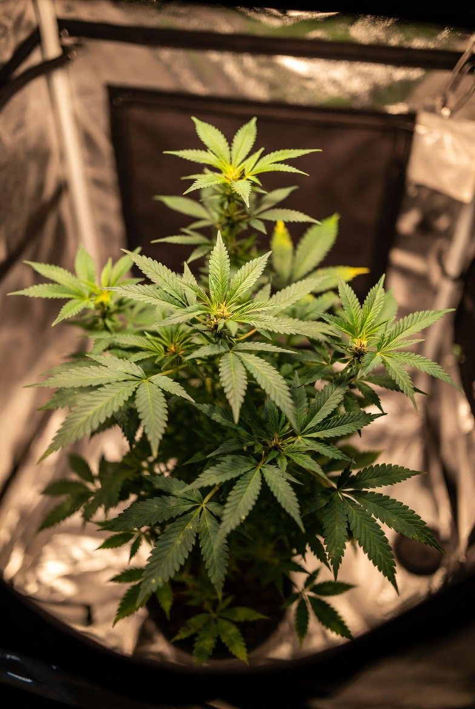
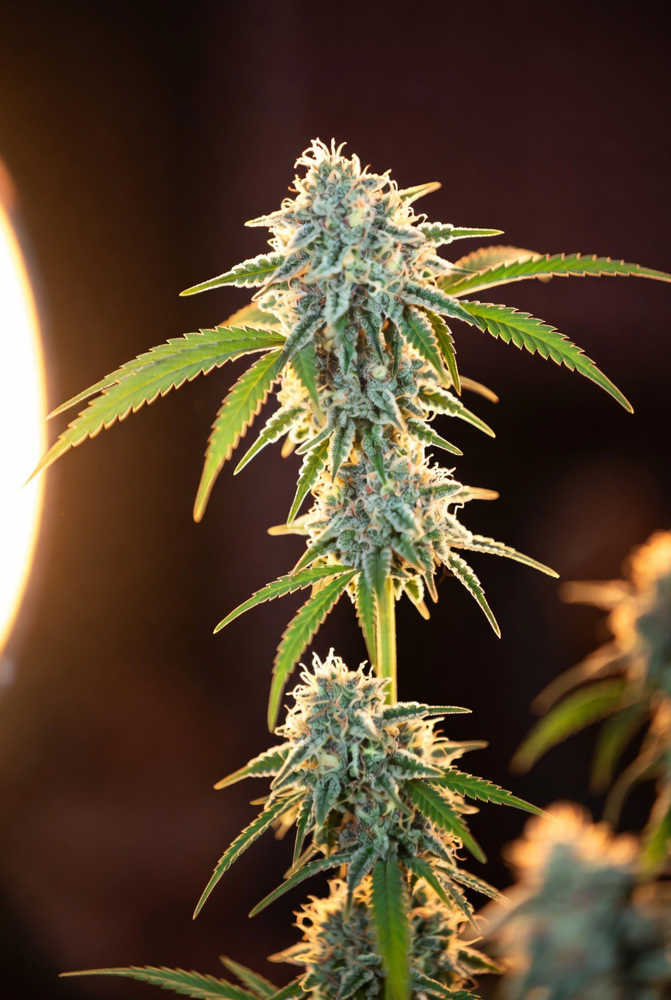
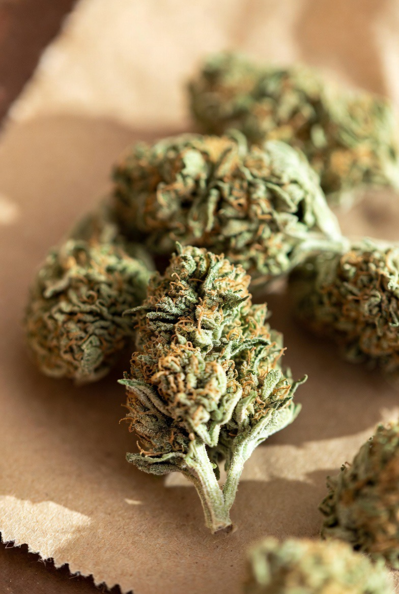

The beginner's roadmap.
Eight stages, in order. Click any stage to see the details — and watch a video where available.

Seedling
Vegetative
Flowering
Harvest01Choose Your Strain
Autoflower or photoperiod? Indica, sativa, or hybrid? Your choice here shapes everything else — growth time, light needs, and final effect.
Choose Your Strain
Autoflower or photoperiod? Indica, sativa, or hybrid? Your choice here shapes everything else — growth time, light needs, and final effect.

02Germinate Your Seed
Paper towel, glass of water, or straight to soil — getting the taproot out safely without stressing a seed that has never seen light.
Germinate Your Seed
Paper towel, glass of water, or straight to soil — getting the taproot out safely without stressing a seed that has never seen light.

03Set Up Your Environment
Light, airflow, temperature, and humidity. Your grow space needs to hit specific targets before the plant goes in — not after problems start.
Set Up Your Environment
Light, airflow, temperature, and humidity. Your grow space needs to hit specific targets before the plant goes in — not after problems start.
💡 Tip: stabilise your tent/room for 24 hours before you germinate — chasing temperature swings with a plant already in there is much harder.
04Seedling Stage
Gentle light, high humidity, minimal water. The seedling is fragile — your job is to do less, not more, and let it establish roots.
Seedling Stage
Gentle light, high humidity, minimal water. The seedling is fragile — your job is to do less, not more, and let it establish roots.
💡 Tip: resist watering daily — a seedling's roots are tiny, and overwatering is the most common beginner mistake here.
05Vegetative Growth
Your plant builds its structure here. More light, more water, and optional training to shape the canopy for maximum bud sites later.
Vegetative Growth
Your plant builds its structure here. More light, more water, and optional training to shape the canopy for maximum bud sites later.
💡 Tip: any training (LST, topping) is easiest and least stressful early in veg, while stems are still flexible.
06Flowering Stage
Buds form and fatten over 7–11 weeks. Environment stability matters most here — stress during flower directly costs you quality and yield.
Flowering Stage
Buds form and fatten over 7–11 weeks. Environment stability matters most here — stress during flower directly costs you quality and yield.
💡 Tip: avoid any big changes (light, feed, training) in the last 2 weeks — let the plant finish undisturbed.
07Harvest at the Right Time
Read the trichomes under a loupe or microscope. Milky and amber trichomes on the buds — not the sugar leaves — tell you when to chop.
Harvest at the Right Time
Read the trichomes under a loupe or microscope. Milky and amber trichomes on the buds — not the sugar leaves — tell you when to chop.
💡 Tip: check trichomes on multiple buds around the plant, not just one — ripening isn't always even.
08Dry, Cure & Enjoy
The final stage most beginners rush. A slow dry and a 4–8 week cure in sealed glass jars transforms good buds into exceptional ones.
Dry, Cure & Enjoy
The final stage most beginners rush. A slow dry and a 4–8 week cure in sealed glass jars transforms good buds into exceptional ones.
💡 Tip: use a properly sized jar — too much empty air space speeds up terpene loss during cure.